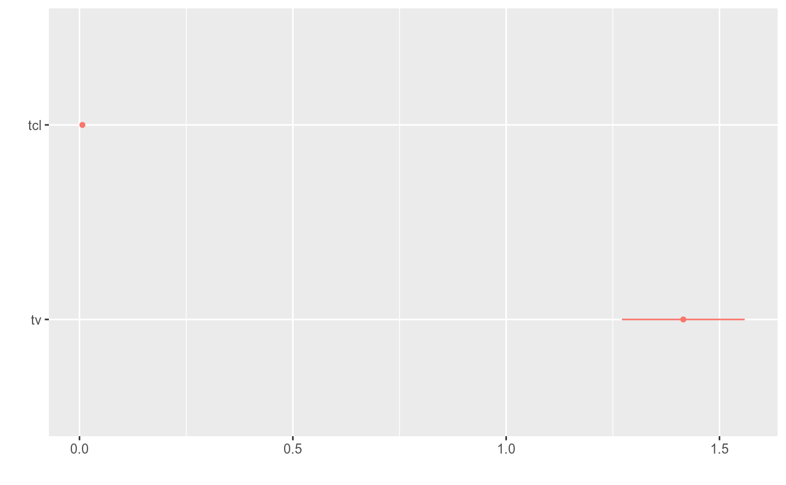

nlmixr
The broom and broom.mixed packages
broom and broom.mixed are packages that attempt to put standard model outputs into data frames. nlmixr supports the tidy and glance methods but does not support augment at this time.
Using a model with a covariance term, the Phenobarbital model, we can explore the different types of output that is used in the tidy functions.
To explore this, first we run the model:
library(nlmixr)
## To allow nlmixr to reload runs without large run times
## To run the actual models on your system, take the save options off.
options(nlmixr.save=TRUE,
nlmixr.save.dir=system.file(package="nlmixr"));
pheno <- function() {
ini({
tcl <- log(0.008) # typical value of clearance
tv <- log(0.6) # typical value of volume
## var(eta.cl)
eta.cl + eta.v ~ c(1,
0.01, 1) ## cov(eta.cl, eta.v), var(eta.v)
# interindividual variability on clearance and volume
add.err <- 0.1 # residual variability
})
model({
cl <- exp(tcl + eta.cl) # individual value of clearance
v <- exp(tv + eta.v) # individual value of volume
ke <- cl / v # elimination rate constant
d/dt(A1) = - ke * A1 # model differential equation
cp = A1 / v # concentration in plasma
cp ~ add(add.err) # define error model
})
}
fit <- nlmixr(pheno, pheno_sd, "saem")
#> Loading model already run (/home/matt/R/x86_64-pc-linux-gnu-library/3.5/nlmixr/nlmixr-pheno-pheno_sd-saem-4e1d75f610dfc7b582af6cceee46bc57.rds)Glancing at the goodness of fit metrics
Often in fitting data, you would want to glance at the fit to see how well it fits. In broom, glance will give a summary of the fit metrics of goodness of fit:
glance(fit)
#> # A tibble: 1 x 5
#> OBJF AIC BIC logLik conditionNumber
#> <dbl> <dbl> <dbl> <dbl> <dbl>
#> 1 722. 1019. 1037. -503. 7.46Note in nlmixr it is possible to have more than one fit metric (based on different quadratures, FOCEi approximation etc). However, the glance only returns the fit metrics that are current.
If you add conditional weighted residuals to the fit the objective function is changed to the FOCEi metric:
fit <- fit %>% addCwres()
#> Calculating residuals/tables
#> done.Now the glance gives the FOCEi values.
glance(fit)
#> # A tibble: 1 x 5
#> OBJF AIC BIC logLik conditionNumber
#> <dbl> <dbl> <dbl> <dbl> <dbl>
#> 1 689. 986. 1004. -487. 7.46Of course you can always change the type of objective function that nlmixr uses:
setOfv(fit,"gauss3_1.6") # Setting objective function to gauss3_1.6By setting it back to the SAEM default objective function of gauss3_1.6, the glance(fit) has the same values again:
glance(fit)
#> # A tibble: 1 x 5
#> OBJF AIC BIC logLik conditionNumber
#> <dbl> <dbl> <dbl> <dbl> <dbl>
#> 1 722. 1019. 1037. -503. 7.46For convenience, you can do this while you glance at the objects:
glance(fit, type="FOCEi")
#> # A tibble: 1 x 5
#> OBJF AIC BIC logLik conditionNumber
#> <dbl> <dbl> <dbl> <dbl> <dbl>
#> 1 689. 986. 1004. -487. 7.46Tidying the model parameters
Tidying of overall fit parameters
You can also tidy the model estimates into a data frame with broom for processing. This can be useful when integrating into 3rd parting modeling packages. With a consistent parameter format, tasks for multiple types of models can be automated and applied.
The default function for this is tidy, which when applied to the fit object provides the overall parameter information in a tidy dataset:
tidy(fit)
#> # A tibble: 6 x 5
#> effect group term estimate std.error
#> <chr> <chr> <chr> <dbl> <dbl>
#> 1 fixed <NA> tcl 0.00674 0.000446
#> 2 fixed <NA> tv 1.42 0.0734
#> 3 ran_pars ID sd__eta.cl 0.496 NA
#> 4 ran_pars ID sd__eta.v 0.392 NA
#> 5 ran_pars ID cor__eta.v.eta.cl 0.986 NA
#> 6 ran_pars Residual(add) add.err 2.84 NAnlmixr converts the log-transformed estimates to the normal scale for these tidy summaries, just like what was done for the fit$parFixedDf data frame. Unlike that data-frame, the standard errors are also transformed by an approximation to the normal scale.
By default, this only applies to parameters that nlmixr has determined are on a log-scale (those that are not are not included in the transformation). This behavior can be turned on or off with the exponentiate argument.
tidy(fit, exponentiate=FALSE) ## No transformation applied
#> # A tibble: 6 x 5
#> effect group term estimate std.error
#> <chr> <chr> <chr> <dbl> <dbl>
#> 1 fixed <NA> tcl -5.00 0.0661
#> 2 fixed <NA> tv 0.347 0.0518
#> 3 ran_pars ID sd__eta.cl 0.496 NA
#> 4 ran_pars ID sd__eta.v 0.392 NA
#> 5 ran_pars ID cor__eta.v.eta.cl 0.986 NA
#> 6 ran_pars Residual(add) add.err 2.84 NAtidy(fit, exponentiate=TRUE) ## No transformation applied on every parameter
#> # A tibble: 6 x 5
#> effect group term estimate std.error
#> <chr> <chr> <chr> <dbl> <dbl>
#> 1 fixed <NA> tcl 0.00674 0.000446
#> 2 fixed <NA> tv 1.42 0.0734
#> 3 ran_pars ID sd__eta.cl 0.496 NA
#> 4 ran_pars ID sd__eta.v 0.392 NA
#> 5 ran_pars ID cor__eta.v.eta.cl 0.986 NA
#> 6 ran_pars Residual(add) add.err 2.84 NANote that the default is exponentiate=NA which is adaptive exponentiation.
Also note, at the time of this writing the default separator between variables is ., which doesn’t work well with this model giving cor__eta.v.eta.cl. You can easily change this by:
options(broom.mixed.sep2="..")
tidy(fit)
#> # A tibble: 6 x 5
#> effect group term estimate std.error
#> <chr> <chr> <chr> <dbl> <dbl>
#> 1 fixed <NA> tcl 0.00674 0.000446
#> 2 fixed <NA> tv 1.42 0.0734
#> 3 ran_pars ID sd__eta.cl 0.496 NA
#> 4 ran_pars ID sd__eta.v 0.392 NA
#> 5 ran_pars ID cor__eta.v..eta.cl 0.986 NA
#> 6 ran_pars Residual(add) add.err 2.84 NAThis gives an easier way to parse value: cor__eta.v..eta.cl
Adding a confidence interval to the parameters
The default R method confint works with nlmixr fit objects:
confint(fit)
#> model.est estimate 2.5 % 97.5 %
#> tcl -5.0001838 0.006736709 0.005917697 0.007669072
#> tv 0.3472636 1.415189661 1.278458475 1.566544252
#> add.err 2.8404780 2.840477980 NA NAThis transforms the variables as described above. You can still use the exponentiate parameter to control the display of the confidence interval:
confint(fit, exponentiate=FALSE)
#> model.est estimate 2.5 % 97.5 %
#> tcl -5.0001838 0.006736709 -5.129808 -4.8705596
#> tv 0.3472636 1.415189661 0.245655 0.4488721
#> add.err 2.8404780 2.840477980 NA NAHowever, broom has also implemented it own way to make these data a tidy dataset. The easiest way to get these values in a nlmixr dataset is to use:
tidy(fit, conf.level=0.9)
#> # A tibble: 6 x 7
#> effect group term estimate std.error conf.low conf.high
#> <chr> <chr> <chr> <dbl> <dbl> <dbl> <dbl>
#> 1 fixed <NA> tcl 0.00674 0.000446 0.00604 0.00751
#> 2 fixed <NA> tv 1.42 0.0734 1.30 1.54
#> 3 ran_pars ID sd__eta.cl 0.496 NA NA NA
#> 4 ran_pars ID sd__eta.v 0.392 NA NA NA
#> 5 ran_pars ID cor__eta.v..e… 0.986 NA NA NA
#> 6 ran_pars Residual(a… add.err 2.84 NA NA NAThe confidence interval is on the scale specified by exponentiate, by default the adaptive scale.
Extracting other model information with tidy
The type of information that is extracted can be controlled by the effects argument. ## Extracting only fixed effect parameters
The fixed effect parameters can be extracted by effects="fixed"
tidy(fit, effects="fixed")
#> # A tibble: 2 x 4
#> effect term estimate std.error
#> <chr> <chr> <dbl> <dbl>
#> 1 fixed tcl 0.00674 0.000446
#> 2 fixed tv 1.42 0.0734Extracting only random parameters
The random standard deviations can be extracted by effects="ran_pars":
tidy(fit, effects="ran_pars")
#> # A tibble: 4 x 4
#> effect group term estimate
#> <chr> <chr> <chr> <dbl>
#> 1 ran_pars ID sd__eta.cl 0.496
#> 2 ran_pars ID sd__eta.v 0.392
#> 3 ran_pars ID cor__eta.v..eta.cl 0.986
#> 4 ran_pars Residual(add) add.err 2.84Extracting random values (also called ETAs)
The random values, or in NONMEM the ETAs, can be extracted by effects="ran_vals" or effects="random"
tidy(fit, effects="ran_vals")
#> # A tibble: 118 x 5
#> effect group level term estimate
#> <chr> <fct> <int> <fct> <dbl>
#> 1 ran_vals ID 1 eta.cl -0.0731
#> 2 ran_vals ID 2 eta.cl -0.215
#> 3 ran_vals ID 3 eta.cl 0.258
#> 4 ran_vals ID 4 eta.cl -0.540
#> 5 ran_vals ID 5 eta.cl 0.320
#> 6 ran_vals ID 6 eta.cl -0.122
#> 7 ran_vals ID 7 eta.cl -0.315
#> 8 ran_vals ID 8 eta.cl -0.394
#> 9 ran_vals ID 9 eta.cl -0.254
#> 10 ran_vals ID 10 eta.cl -0.0227
#> # … with 108 more rowsThis duplicate method of running effects is because the broom package supports effects="random" while the broom.mixed package supports effects="ran_vals".
Extracting random coefficients
Random coefficients are the population fixed effect parameter + the random effect parameter, possibly transformed to the correct scale.
In this case we can extract this information from a nlmixr fit object by:
tidy(fit, effects="ran_coef")
#> # A tibble: 118 x 5
#> effect group level term estimate
#> <chr> <fct> <int> <fct> <dbl>
#> 1 ran_coef ID 1 tcl 0.00626
#> 2 ran_coef ID 2 tcl 0.00543
#> 3 ran_coef ID 3 tcl 0.00872
#> 4 ran_coef ID 4 tcl 0.00392
#> 5 ran_coef ID 5 tcl 0.00928
#> 6 ran_coef ID 6 tcl 0.00596
#> 7 ran_coef ID 7 tcl 0.00492
#> 8 ran_coef ID 8 tcl 0.00454
#> 9 ran_coef ID 9 tcl 0.00523
#> 10 ran_coef ID 10 tcl 0.00659
#> # … with 108 more rowsThis can also be changed by the exponentiate argument
tidy(fit, effects="ran_coef", exponentiate=FALSE)
#> # A tibble: 118 x 5
#> effect group level term estimate
#> <chr> <fct> <int> <fct> <dbl>
#> 1 ran_coef ID 1 tcl -5.07
#> 2 ran_coef ID 2 tcl -5.21
#> 3 ran_coef ID 3 tcl -4.74
#> 4 ran_coef ID 4 tcl -5.54
#> 5 ran_coef ID 5 tcl -4.68
#> 6 ran_coef ID 6 tcl -5.12
#> 7 ran_coef ID 7 tcl -5.32
#> 8 ran_coef ID 8 tcl -5.39
#> 9 ran_coef ID 9 tcl -5.25
#> 10 ran_coef ID 10 tcl -5.02
#> # … with 108 more rowsAn example of using a tidy model estimates for other packages
As explained above, this standard format makes it easier for tidyverse packages to interact with model information. An example of this is piping the tidy information to dplyr to filter the effects and then to the dotwhisker package to plot the model parameter confidence intervals.
library(ggplot2)
library(dotwhisker)
library(dplyr)
#>
#> Attaching package: 'dplyr'
#> The following objects are masked from 'package:stats':
#>
#> filter, lag
#> The following objects are masked from 'package:base':
#>
#> intersect, setdiff, setequal, union
fit %>%
tidy() %>%
filter(effect=="fixed") %>%
dwplot()
Happy tidying!